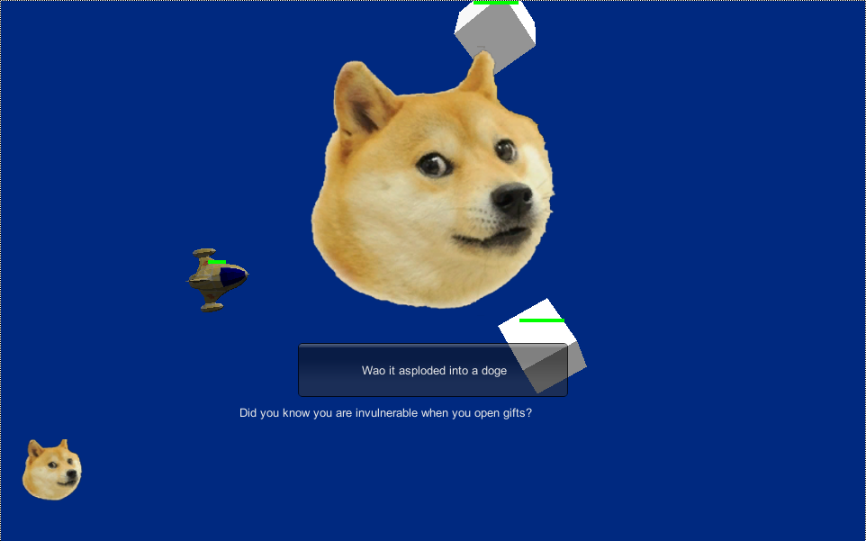
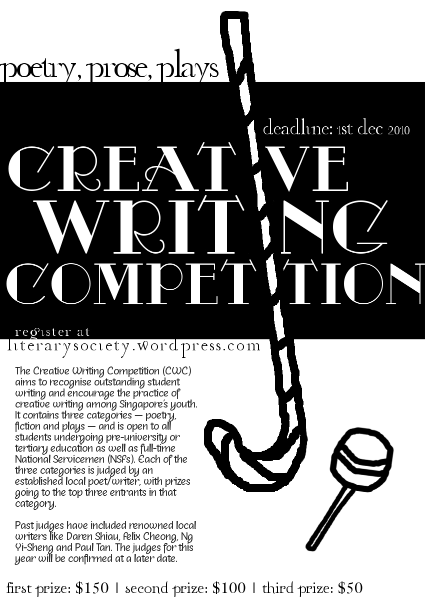
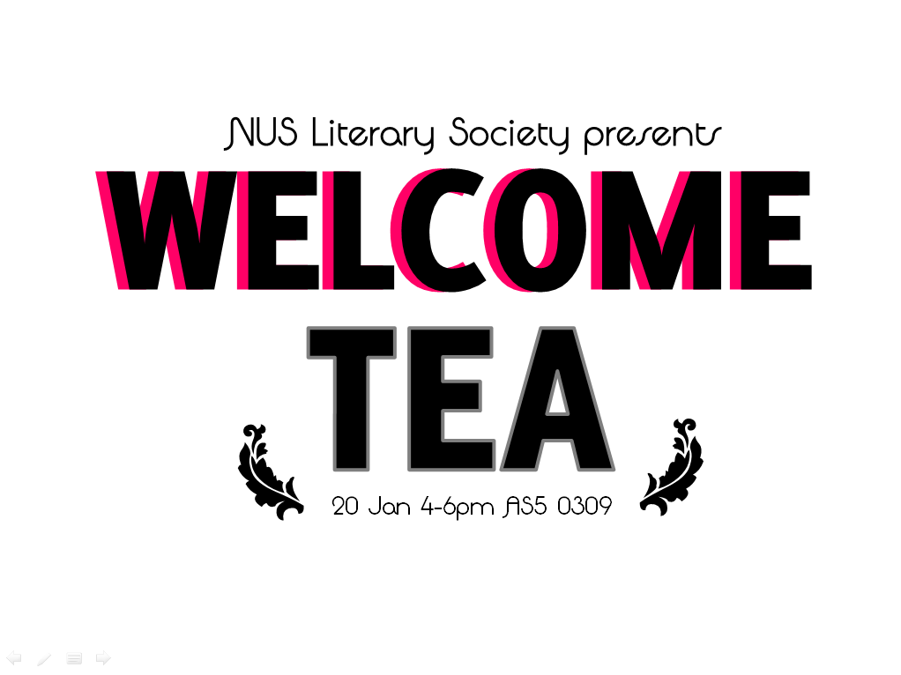
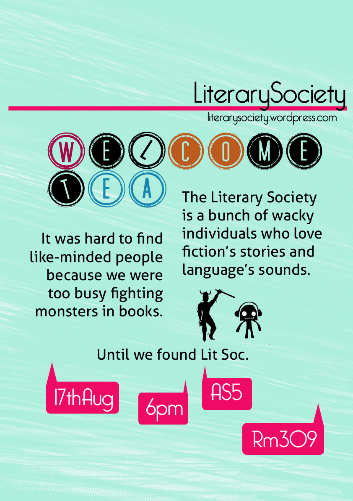

Melodily
Code
Design
Creative Writing Competition
Media
Writing
In the impact before the shatter
On finding a body in the water tank
The staircases of this place
Poem in the voice of your excess time
My heart sleeps without waking
Still Life with Room: Morning
About
Melodily is the handle of one Melody Lee (Zhi Xin), who has a diverse range of interests
from programming to writing. All the pictures and works here are her creations,
with the exception of the picture from "Poem in the voice of your excess time" under
the section "Writings", which is painted by Romare Bearden. Bootstrap helped in some
spacing and padding.
She has also used the following fonts:
- Sybil Green
- Code Pro Demo
- Segoe UI
Contact her by dropping her an email at zhixin91@gmail.com!
Made in a team of 5 consisting of 2 artists, 1 sound designer and 2 programmers, Guardian of the Forest is a Kinect game crafted lovingly in
2 weeks in Unity 3D. It tells the story of a forest endangered by a growing fire, and a fire-resistant magical tree directing water through
its hollow insides to the fire. I was one of the two programmers on this team.
Made in a team of 5 consisting of 2 artists, 1 sound designer and 2 programmers, Climb to the Owl is a Oculus Rift experience crafted in 2 weeks
in Unity 3D. This experience is set in a quirky toy world that springs surprises every block you climb. I was one of the two programmers on this team.
Made in a team of 5 consisting of 2 artists, 1 sound designer and 2 programmers, Blow Dude Blow is a co-operative Jam-O-Drum experience crafted in 1 week
in Unity 3D. Jam-O-Drum is a tabletop platform with four spinning discs around its parameter, each of which has a button to press on top.
Players control balloons which puff air to direct the falling man to a safe hole. I was one of the two programmers on this team.
Made in a team of 7 consisting of 2 artists, 1 producer, 1 Quality Assurance Tester, and 2 programmers, Skyward is a serious game for the PC crafted in 3 weeks
in Unity 3D. Our objective was to make a game that will induce empathy for the disabled, while encouraging players to focus on their abilities.
I was one of the two programmers on this team.
Jiku Video Player is an Android application that enables users to track objects of
interest in videos, based on a combination of computation and crowd-sourcing. A lower
resolution is sufficient most of the time for a video, especially one for a screen as small
as a mobile device. Sometimes, however, you might want to view objects in the video in greater
detail, for example in security camera footage, and hence want to render that particular area in
higher resolution.
I developed this application and its user interface, given the tracking points of objects of interest
that was pre-generated by another program, as well as the backend program of decoding the video in various
resolutions. This was done for my Final Year Project in National University of Singapore.
Geekdo is a to-do manager that enables you
to schedule and organise your tasks quickly
and efficiently. Primarily aimed at geeks,
it allows you to access all functionalities from the
command line, although non-geeks, through the
graphical user interface, will find Geekdo easy to use as well.
Some of Geekdo's functions include: natural language processing,
adding, deleting and editing of tasks, auto-complete, prioritising of tasks
as well as reminders when tasks' deadlines draw near.
This project was done for a Software Engineering module in collaboration
with Goh Horng Bor, Steve Ng and Jiao Jing Ping.
Links:
Download page
CS2103 Hall of Fame
Musical compositions can often be expressed in a structured manner,
whether it be musical form or rhythmic patterns.
With this basic idea, complex compositions can be derived from a certain set of musical rules.
In fact, multiple musical compositions can be derived from a single set of rules,
leading to the ability to create musical improvisations as well.
Generative Grammar is a javascript program that generates a language from user-defined rules.
This project is done in collaboration with Rose Marie Tan for a research module.
Links:
Site
VoxeLab is a game prototyping software that allows you to plan out a game quickly by using
voxels to build game worlds. You need not manipulate meshes to generate 3D worlds,
allowing you to focus more on the game mechanics with respect to the environment. VoxeLab
also aims to provide game-makers with a clear idea of the metrics of the in-game environment,
allowing you to test your game prototype. You will be able to manipulate voxels with the
features of a paint software, add basic game elements and test the prototype.
VoxeLab can be used in 2 modes -- Create Mode and Game Mode. In Create Mode, you can
design, build and edit 3D worlds and game levels using brushes, and group structures of voxels
into objects to support object‐based modelling. In Game Mode, you can edit basic game
elements (such as jump-height and gravity) so as to test your 3D world as a game environment.
This project was done in collaboration with Rose Marie Tan, Liew Jia Zheng Alex and Sing Keng Hua
for a Thematic Systems research project.
Links:
Download page
Item Genie seeks to enable better gaming choices by players by allowing comparisons between items'
attribute bonuses and cost, so that players can tailor their in-game purchases to the current situation
of the game. The UI part focuses on facilitating these comparisons through a graphical manner
and will provide functions to sort, search and selectively focus on specific items and
attributes for side-by-side comparison.
This will be based on backend data of all the in-game items and their properties.
The current version of the program uses Riot Games' League of Legends as an example to demonstrate its functions.
This program was done for a User Interface Development module in collaboration with Peng Ziwei and Zhao Yang.
Links:
Download page

Entered for the programming application of SUTD's Summer Gamelab Internship 2014, Asteroids on Crack is a game
that gives the traditional asteroids game a twist. The application provided us with skeleton code that included
stationary asteroids and a useless ship, and asked that we add motion, rotation and shooting abilities to the ship, as well
as decide what to do when the ship goes out of bounds of the game map. It also required that we add a new gameplay feature
in order to make it fun.
Thus, besides making everything move and adding the start and end screens, lights, sound and a mesh to the ship, I added
a surprise gift feature that pops out when the player destroys an asteroid.
Traditional asteroid games emphasise on the score through the number of asteroids
the player has destroyed, but I thought that competing for high scores might not
be everyone's cup of tea, including mine. Instead, as I was brainstorming for gifting
ideas for my boyfriend, I had a brainwave: everyone loves presents, especially those
which contents they don't know. Why make another mindless destruction game? Why not
a game that capitalises on the thrill of discovery and the inclination to hoard? Every
asteroid destroyed contains a surprise that pops up through scaling, and that gift
belongs to the player till the end of the game, displayed prominently as his loot.
The traditional challenge of the game still exists -- the player still has to dodge
and shoot moving asteroids. But now with the virtual gifts that are contained in
each asteroid, this harks all the way back to a child's love of opening wrapped gifts,
under a christmas tree or not.
Links:
Play it here
Pinata Explosion! is a touch based game designed for mall terminals.
Players are presented with a Pinata that constantly moves,
causing the fuses attached to it to flail around. After lighting as many fuses
as they can by tapping their tips, the pinata explodes into a pile of falling candy.
Players then scramble to toss as many candies as they can into the provided basket --
and we mean literally, with as many fingers as they can use.
This game was designed for eBay in a Game Design module with principles of gamification
in mind. It was done in collaboration with Ivan Ruiz, Alexander Millar, Jessica Zamora
and Andrew Temena.
Links:
Game
Demo video
An exercise in creating games for the browser. In this game, players try to be the first to get three accepted
pairs, which include pairs of numbers that add up to ten, or, in the case of ten or picture cards, two of that
card.
Link:
Site

Made for the Creative Writing Competition 2010 and sent to various pre-tertiary institutions for publicity.
The Annual General Meeting every year had two purposes: to welcome new members of the club, and to elect
the new committee for the following year.
NUS Literary Society held its first overnight orientation camp in 2011. Famous
quotes were referenced and tweaked to emphasise the literary nature of the society
and draw like-minded students to come.

A welcome tea was held for all newly-declared literature majors at the start of 2012. Professors
were invited to brief students on their chosen road, and seniors gave useful advice on what to look
out for when choosing modules.

The Welcome Tea in August of 2012 celebrated the start of the academic year and gave interested students
a peek at upcoming activities, starting off with a tabletop game of Dungeons and Dragons.
As the forest fog clears
The sun with its smoke of light
steaming through the leaves:
a cloud of tea
unfurling into the air.
The end of summer
Down here the sea has draped itself over
its little bed of sand, stretching
like a lazy cat. Shoes in hand
we wade slowly across,
ankles streaming whisker trails,
mini gods treading on water.
I raise my camera
and the next moment
the tide swells in, arching its back
as if awakened.
"Hurry!" my friend hollers
from the opposite bank,
"Don't let the sea take you!"
so I lift my knees up high
like an Olympic hurdler,
slamming seawater on my dress
as I slap my way across.
The water recedes, and I emerge
on the other side, safe
and shaking with laughter.
Nightlife
The city has made
its own night sky:
each streetlamp
another star, so that
the stars themselves
(unused to their reflections)
have hidden behind
the city's bright curtains,
and only the brave ones
dare peer at the winding cars,
coming back with gossip:
Which meteors are returning
after a night
at whose houses?
Navigation 101
Teach me how to find you, dear,
teach me the lessons
you have yet to teach anyone. First
start with the basics: arm me
with a street-map, bold red marker from 'Where I am'
tracing hallways, turning corners,
eventually resting, panting slightly,
at the cross which marks your spot.
Give me a map
big enough to mark you,
and then me. I might still get lost,
1cm to 300m too big a scale
to navigate the labyrinth between us.
Give me time. Give me
more clues— if this was a library
which shelf would I find you at, absorbed?
Would you rather curl up with one book, or
nudge several out at once, then settle beside
with your hoard?
At the cinema, my eyes
adjusting to the darkness: should I scan the aisles first,
or split the sea of seats in the middle
with my probing periscope?
As I get better, award me with a remote sensor—
program it to detect the frequency of your thoughts, so,
walking down a corridor, if it should
beep with a frenzy
I could pause, to
lean my ear on the muffled wall. Tune my ear:
straighten my bent 'F'-sharp, soften my harsh 'A'
that I might not spoil your music. Finally:
if I have learnt well (but never enough)
permit me to enter, to
whisk the pages off
your score, and then,
with the empty page,
ink a bar that scrawls out of the page borders
to make a music only we can find.
In the impact before the shatter
In the impact before the shatter
Your skin a house of fever
And my tongue it runs a murmur
My hands the curve of your shoulder
Wash over your spine a river
In the impact before the shatter
Recede and rush I find your ear
The lobes they yield like wheat like fur
And my tongue it runs a murmur
Your hands they wrap my neck my collar
A push and you have me down under
In the impact before the shatter
Close eyes call skin your lips they cover
A cloak each stitch my mouth they hover
And my tongue it runs a murmur
My arms tighten a loop a shackle
Your body a cage and I prisoner
In the impact before the shatter
And my tongue it runs a murmur
On finding a body in the water tank
"Frothy and discoloured" was how
the newspaper described their tap water one morning.
They would have used it for several things before the discovery,
routine things: rinsing their mouths, a wake-up shower,
a bowl of soup. At this groggy hour
the body could almost be
alive: the tank
expanding, contracting
redly, propelling blood cells
to this household, that. The block of flats
breathing. Twitching.
This morning my father fetched the net
hanging by the side of his fish tank,
made a clean scoop. I wonder
how the discus must feel, swimming
under the shadow of their dead friend.
Drifting by the surface, one glassy eye
upturned, towards the dry world
it cannot experience, the other
observing quietly the inhabitants.
It could almost
just be a fallen leaf.
The staircases of this place
The staircases of this place
chug like trains, upward trains,
empty to a locked door whose eye
glimpses sky and painted pipes
while level upon level stacks a kitty flap
squeaking open, shut, unloading office refugees.
Carriage atop carriage the conveyor belt
moves smoke and distant murmurs,
occasionally shaping into fragments
like a torn letter from long-ago times
"obviously... doesn't understand"
"...had to abort, but then"
"...work, and work, and work..."
"a bitch, she thinks she..."
, moves the sound of zips like a plunge in dark tunnel
the wind whooshing in a rustle of skirts
a swerve of bitten gasp
a rumble of tracks in thumping
movement
, moves slow breaths and the tick,
tick of watches.
Outside each kitty flap the green-lit "EXIT"
outlines a silhouette
of a running man;
just two metres away,
a loaded elevator stops
on every floor.
Poem in the voice of your excess time
in response to 'Falling Star' by Romare Bearden
Once you kept flowers, gave vases to them, forgot
vases stayed long after flowers died. When the house was new
you were happy to be guided by lamps, feigning forgetfulness
around the furniture you arranged. You forgot
me. Thought that once given,
I would never return.
But I did, drop by torrent. At first
in minutes: the peak hour traffic, the extended
appointments. I hid in your dinners, slowed,
had to be heated. You tended to your flowers,
gave them sun. Restaurant: his calls,
apologetic, your orders to the waiter:
the set meal for one.
The candles burned. I came back,
put them out, kissed your eyelids; you rose from sleep,
eyes stinging, listening to the darkness
of the house. I pooled in your pots,
drowned your flowers. You threw them away.
I made my home in your ransacked laundry. You tried
to hang them dry, but the creases
would not allow. I surged, took over
your house, ran your watercolour dress. Why resist,
sweetheart? You sobbed,
felt me clogging your lungs. You stopped lighting
the candles. Of course. Saw me in every pocket,
thought me a fly when you poured yourself a drink.
I am the drink. Now it is night.
Give yourself to me. Now your body
a meandering shadow, earrings
glinting the moon's light.
My heart sleeps without waking
My heart sleeps without waking in the arms of sadness.
--from La Vie En Rose
Life goes on.
May is the month of heat and thunderstorms.
I bring Elaine to the zoo
but all the animals are hiding in the shade.
Half an hour in
we sit dumbly in front of the penguins,
envying their wallpaper glaciers.
Elaine understands, makes few demands.
When we get home I prepare dinner,
she washes up. As usual
I cook too much, or eat too little.
The gods have left too much hair
in their bathroom drain; no air
comes through to us.
Back in my room
my fingers fidget across the keyboard,
as if I could propel a breeze with that.
I talk to old friends, make new ones.
My words sink down like dregs.
At night I loosen the curtains,
crank the fan to a higher speed.
As I drift off the sky crunches into rain.
Dimly I feel the wind
beating against the windows,
curtains flung across rattling grills.
My heart sleeps without waking.
I have dreams of you. In the morning
I rise for work, quietly leave
my sleeping heart.
Still life with room: morning
In the morning the room
trembling with things in half motion:
book covers light as sifted flour,
wires loosening their noodle loops,
pens dozing off on perfume caps
dreaming of hammocks, unladen.
Vignetes
Morning rituals
In the dim of the morning,
my roommate stands in front
of the full-length mirror.
I wish I could draw my eyes
the way she can,
But I am always late for class
the back of my hair
flattened from my bed.
Artistic expression
It is like
a dotted line,
I tell my hand,
which wields
an eyeliner.
But it is
an artist,
it tells me,
who must
break out of
boundaries.
Laurel and Front
A woman stands on the corner
of Laurel and Front,
Her ear bobbing
as she examines the inside
of her takeout box,
Gives the flap a last lick
before dropping it in the bin.
The carpet has been stealing
How many hairpins have dropped
on the grey carpet?
Today I picked up yet another,
gleaming too much
to camouflage.